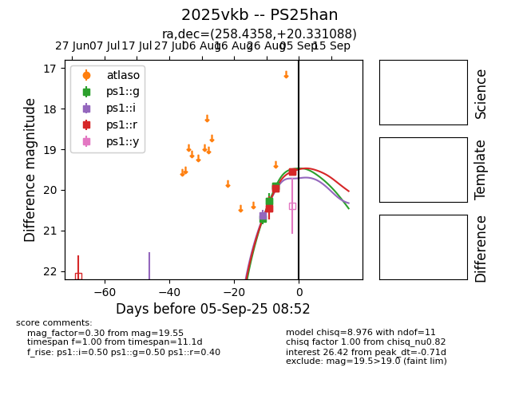

FINK: ZTF25abnksro
Lasair: ZTF25abnksro
ALeRCE: ZTF25abnksro
TNS: 2025vkb
YSE: 2025vkb
2025vkb (yse,tns)
PS25han (panstarrs)
ZTF25abnksro (ztf,fink)
equatorial (ra, dec) = (258.4358,+20.33109)
galactic (l, b) = (41.7485,+30.23159)

last ps1::g=20.04, ps1::i=19.67, ps1::r=19.79, ztfg=20.07, ztfr=19.54
11 ps1::g, 5 ps1::i, 17 ps1::r, 4 ztfg, 1 ztfr detections